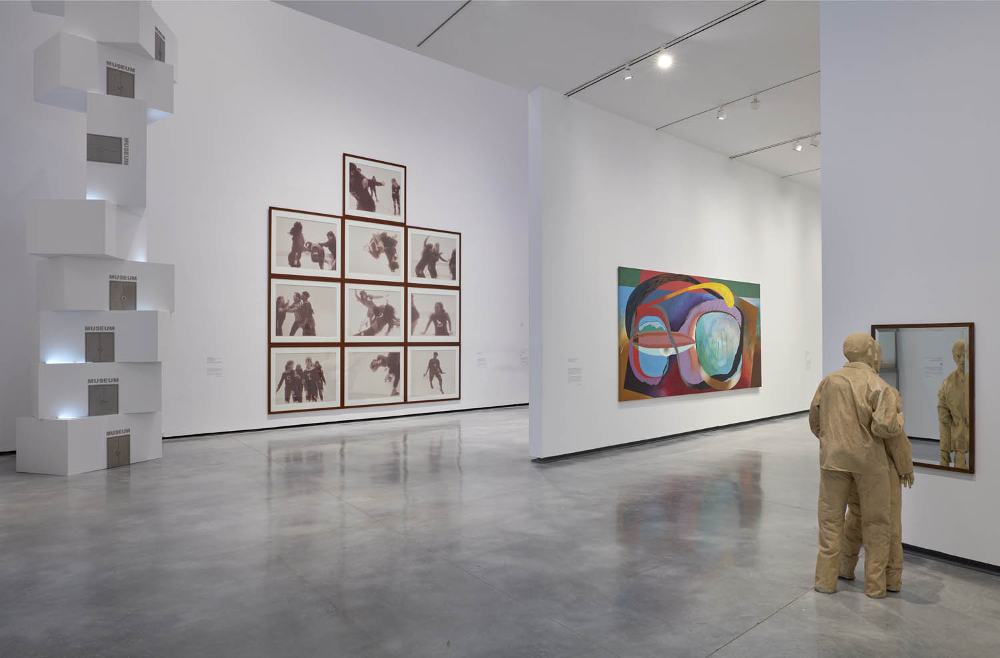
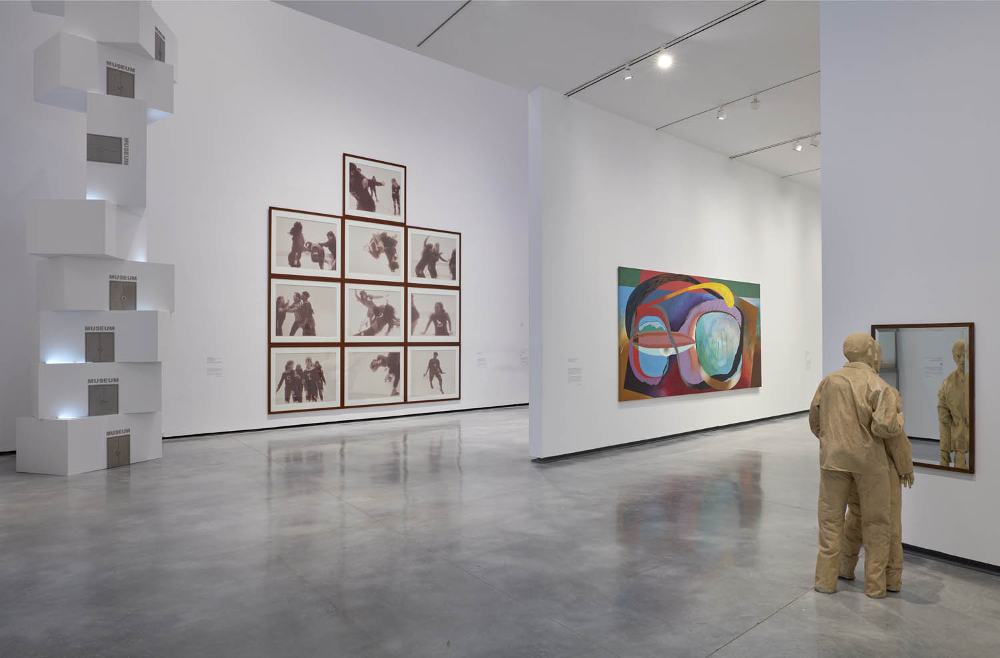
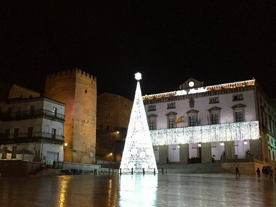

Para una escapada
Visita el Museo de Arte Moderno Helga de Alvear. Es un lugar único donde podrás explorar una de las colecciones más impresionantes de arte contemporáneo en España. Perfecto para inspirarte y desconectar. Además, es gratuito 😮!
No es solo una encuesta, es una invitación a ser parte del cambio. Juntos podemos transformar nuestra ciudad, construir un Cáceres donde cada rincón cuente con oportunidades, donde cada barrio refleje el esfuerzo y la pasión de sus habitantes. Queremos escucharte. Porque tu voz importa.
Visita el Museo de Arte Moderno Helga de Alvear. Es un lugar único donde podrás explorar una de las colecciones más impresionantes de arte contemporáneo en España. Perfecto para inspirarte y desconectar. Además, es gratuito 😮!
Disfruta de un ambiente relajado en la Plaza Mayor o anímate a explorar la vida nocturna en La Madrila. Desde terrazas tranquilas hasta locales animados, ¡tienes donde elegir!
En la Plaza Mayor encontrarás si vienes por nacisas o por la noche, un ambiente relajado y tranquilo. Además de las maravillosa luces de Navidad que adornan la plaza y el ayuntamiento.
Regresa a nuestra página principal para completar la encuesta y ayudarnos a construir un Cáceres mejor.